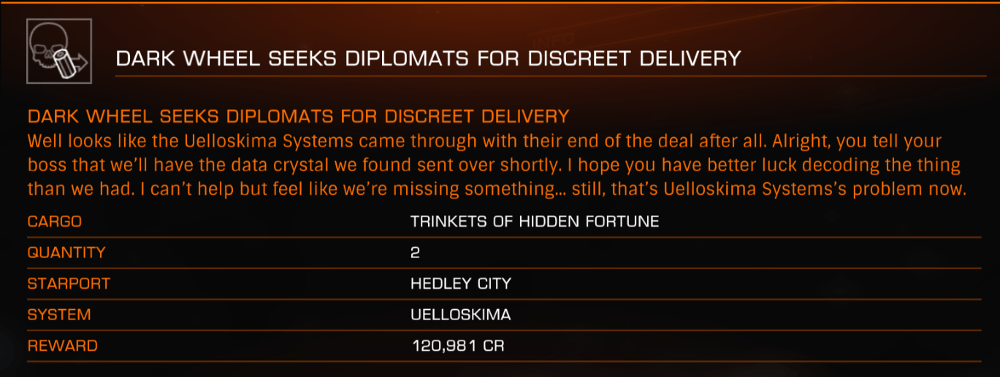

This is an archive of Drew Wagar‘s lore guide, available here with his kind permission. Drew is no longer actively maintaining his lore pages, and they may not be accurate post v2.4 of Elite Dangerous.
The Dark Wheel is another legend of Elite Dangerous that stretches back to the dim and distant past, perhaps second only to the legendary planet Raxxla in its elusiveness.
It was once described thus:
“… a semi-legendary space unit, star-riders who made it their business to seek the truth behind the plethora of myths and romantic stories that filtered back from all corners of the Universe: fabulous cities, parallel worlds, time travellers, even planets that appeared to be the old ‘heaven’ of Earth legend. The Dark Wheel was as mysterious and as mythical to the traders of the Galaxy as King Arthur might have been to the first spacemen.”
The Dark Wheel was closely associated with Raxxla, and the indications were that this group of individuals were actively seeking it out and had, by some accounts, found it. The Dark Wheel was known to be recruiting pilots of exceptional ability and who also had a desire for exploration. Certainly they maintained a cloak of anonymity.
The only canon individual known to have actually been a member of the Dark Wheel was an Elite combateer by the name of Jason Ryder. Whatever knowledge he had about their operations (and indeed the location of Raxxla itself) was lost when he was assassinated some time prior to 3125. His son, Alex Ryder, later despatched the assassin in a pitched battle over a planet called ‘Cirag’, though with revisions to system naming over the last two hundred years, the exact location of the altercation is uncertain.
The Dark Wheel dropped out of mind in the intervening years, the conclusion being that perhaps their membership had aged and they had become defunct over the centuries.
Other reports, as detailed in the story of “And here the wheel” by John Harper, indicate that the Dark Wheel never managed to locate Raxxla, but instead did locate a mysterious planet called ‘Soontill’ which was reputedly a “world full of Thargoid treasures beyond anyone’s wildest dreams.” The Dark Wheel was by this point headed by a member of the Ryder family, Alex himself having two sons: Neptune and Oberon. These brothers were divided over whether or not to pursue Soontill or Raxxla.
By 3300 much of this had faded into the depths of history, but a minor faction calling itself ‘The Dark Wheel’ emerged in the ‘Shinrarta Dezhra’ system (also known as the ‘Founders World’) around about this time, offering some specialised missions. The system itself is permit locked by the Pilots Federation, requiring Commanders to reach an Elite ranking before being able to access it.

Whether this new ‘Dark Wheel’ (at least partly operating in the open) is the same ‘Dark Wheel’ of ancient lore, a remnant of it, or a totally new organisation simply trading on the mystique of the name is not clear. There are notable similarities; missions are often ambiguous, couched in riddles and they only accept pilots of very high calibre.
The Dark Wheel remains a mystery – and those who are likely to know are unlikely to talk.